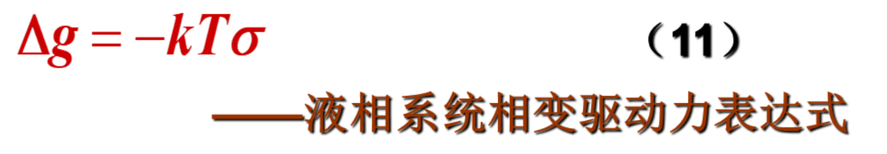
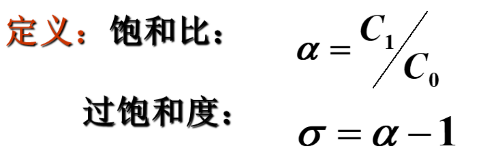
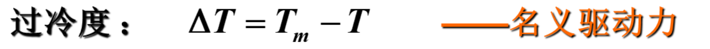
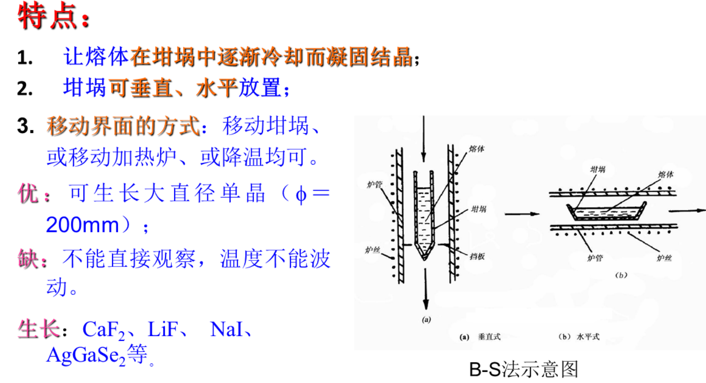
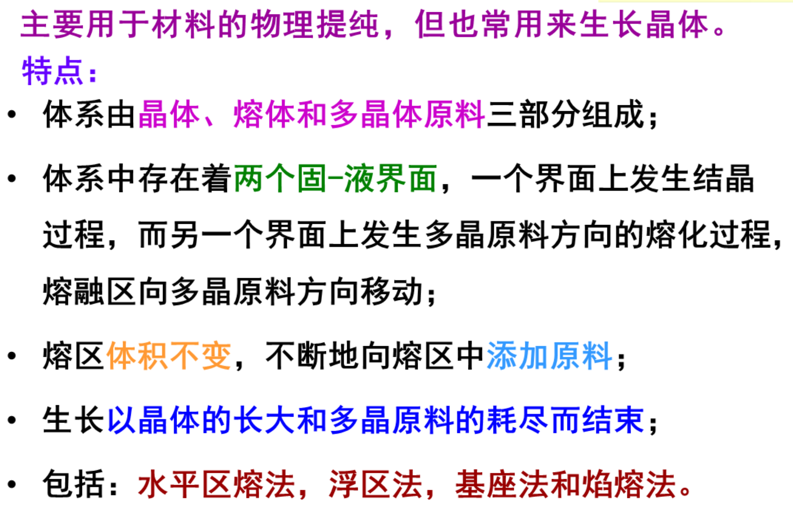
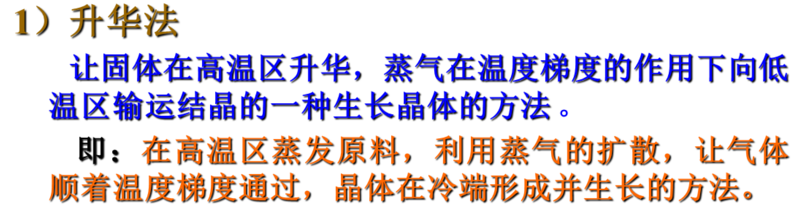
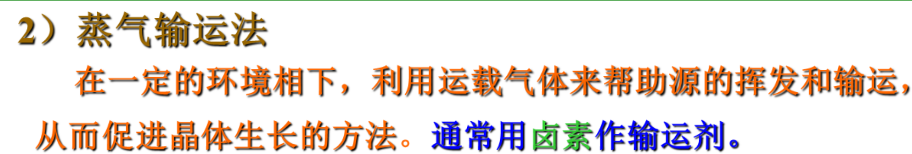
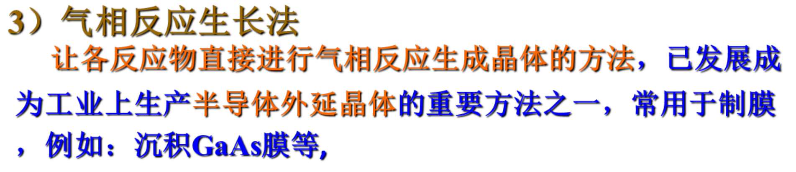
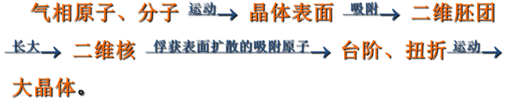

再结晶、液相生长相变驱动力、熔体生长相变驱动力、均匀成核、非均匀成核、熔体生长方法(提拉法、坩埚移动法及区域熔化技术)、气-固相平衡生长( 晶体气相生长、HgI2单晶体的生长)
液相相变驱动力：
熔体生长的相变驱动力：
均匀成核：所谓的均匀成核，是指在一个热力学体系内，各处的成核几率相等。
非均匀成核：所谓非均匀成核，是指体系在外来质点，容器壁或原有晶体表面上形成的核。在此类体系中，成核几率在空间各点不同。
熔体的生长方法：






非晶态材料的基本概念和性质、非晶态材料的分类、非晶态材料的制备